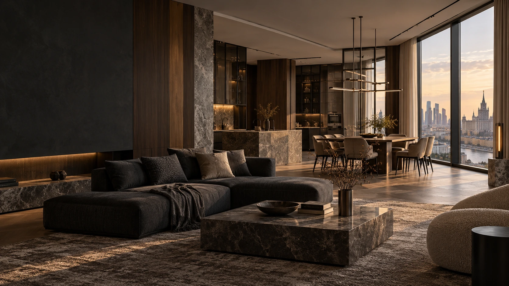
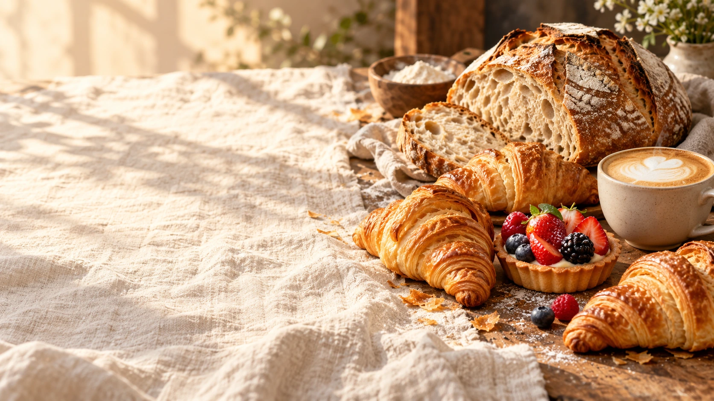
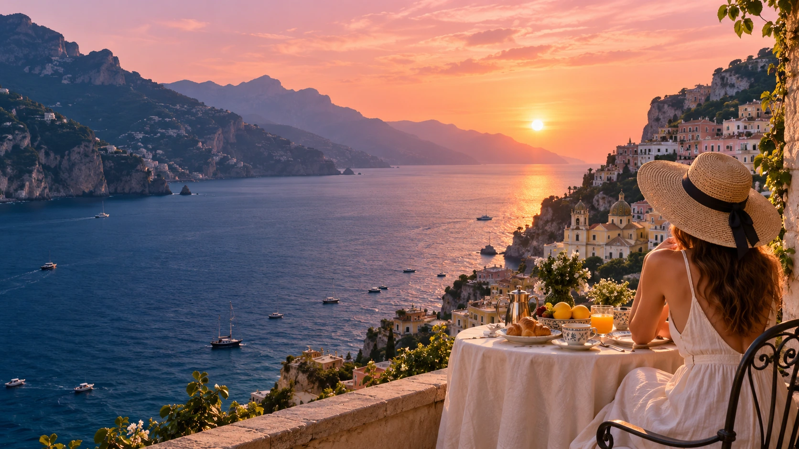

mimi.design
MimiToysТепло в каждой детали
Восемь разных миров. Продуманный дизайн,
живые детали и опыт, который хочется исследовать.
Откройте любой проект.
Полистайте, попробуйте, рассмотрите детали.





У каждого проекта своя палитра, типографика и ритм. Дизайн раскрывает настроение бренда.
Каталоги, фильтры, корзины, запись и калькуляторы. Страницы можно не только смотреть, но и исследовать.
Адаптивные композиции, доступная навигация, быстрые локальные изображения и аккуратные детали.